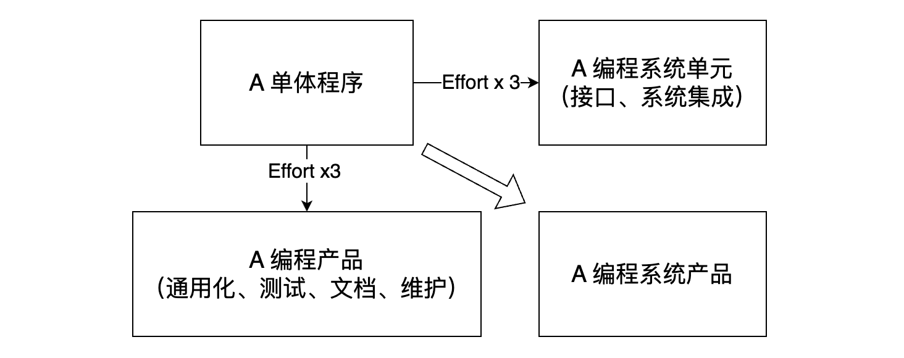
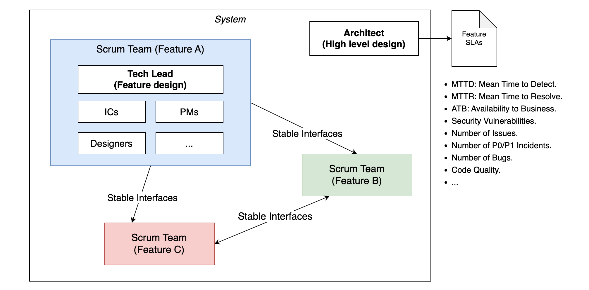

《人月神话》读书笔记
很多人推荐的一本书，曾被奉为软件工程领域的“圣经”。书中的内容源于作者 Brooks 博士在 IBM 公司任 System 系列计算机以及其软件系统 OS 项目经理时总结的实践经验。
第 1 章 - 焦油坑
- 编程系统产品的演进：

- 单体程序：完整的，由作者在所开发系统平台上运行。通常是车库中产出的产品，以及作为单个程序员生产率的评估标准；
- 编程产品：可以被任何人运行、测试、修复和扩展的程序（框架）。需要规定代码的编写风格，提供详尽的测试用例，以及完备的文档；
- 编程系统构建单元：功能上相互协作，具有规范格式、可进行交互的程序集合，可用来搭建和组装整个系统。单元需要有精确定义的稳定接口，满足系统资源限制。且需与其他单元进行集成测试；
- 编程系统产品：成本是单体程序开发成本的 9 倍。然而，只有它才是真正有用的产品，是大多数系统开发的目标。
第 2 章 - 人月神话
- 在众多软件项目中，缺乏合理的进度安排是造成项目滞后的最主要原因，它比其他所有因素加起来的影响还要大。一些常见的错误假设包括：
- 单纯认为一切都将运作良好，每一项任务仅花费它所“应该”花费的时间；
- 使用“人月”作为衡量一项工作的规模是一个危险和带有欺骗性的神话，它暗示人员数量和时间是可以相互替换的（没有计算信息沟通成本）；
- 进度安排不合理（包括测试、开发等阶段）；
- 当项目进度落后时，采取了不恰当的“补救”措施。
- 系统软件任务的进度安排法则：测试花费占一半时间，以防在临近发布时才发现问题，导致项目延误，产生高昂的二次商业代价。除此之外，通过开发并推行生产率图表、缺陷率图表、估算规则等方式，可以让进度安排更加精确有效。
- 1/3 计划；
- 1/6 编码；
- 1/4 构件测试和早期系统测试；
- 1/4 系统测试，所有构件已完成。
- Brooks 法则：向进度落后的项目中增加人手，只会使进度更加落后。人手的突然增加会涉及招聘、培训、任务重新分解等一系列新的流程。而这些流程带来的时间开销也会相应延长任务周期，反而影响任务的预期进度。通常情况下，可以采取以下方式：
- 重新安排进度：在新的进度安排中分配充分的时间，以确保工作能仔细、彻底地完成；
- 削减任务：当项目延期所导致的二次成本非常高时，这常常是唯一可行的方法。
第 3 章 - 外科手术队伍
- 优秀程序员和较差程序员之间生产率的差异有 10+ 倍之多。需要协作沟通的人员数量影响着开发成本，因为成本的主要组成部分是相互的沟通和交流，以及更正沟通不当所引起的不良结果。因此，系统应该由尽可能少的人员来开发。
- 对于效率和概念的完整性来说，最好由少数干练的人员来设计和开发；对于大型系统，则需要大量的人手，以使产品能在时间上满足要求。如何调和这两方面的矛盾？

A：Harlan Mills 提供了一个解决方案。大型项目的每一个部分（业务层面的分解）由一个团队解决，由少数人来完成问题的分解，其他人给予他所需要的支持，以提高效率和生产力。团队的扩建基于这样一个事实：系统的整体设计需要由少数人决议和制定，且需要清晰地划分体系结构设计和实现之间的界限。
第 4 章 - 贵族专制、民主政治和系统设计
- 概念的完整性：“风格的一致和完整性来自 8 代拥有自我约束和栖牲精神的建筑师们，他们每一个人辆牲了自己的一些创意，以获得纯粹的设计”。牺牲所谓的“个人品味”，保持整体的一致和完整。在系统设计中，概念完整性应该是最重要的考虑因素。也就是说，为了反映一系列连贯的设计思路，宁可省略一些不规则的特性和改进，也不提倡独立和无法整合的系统，哪怕它们其实包含着许多很好的设计。系统的概念完整性决定了其使用的容易程度。不能与系统基本概念进行整合的良好想法和特色，最好放到一边，不予考虑。如果出现了很多非常重要但不兼容的构想，就应该抛弃原来的设计，对不同基本概念进行合并，在合并后的系统上重新开始。概念的完整性要求设计必须由一个人，或非常少数互有默契的人来实现（专制体现）。概念的完整性要求系统只反映唯一的设计理念，用户所见的技术说明来自少数人的思想。
- 实现同样是一项高级的创造性活动。具体实现中创造和发明的机会，并不会因为指定了外部技术说明而大为减少，相反创造性活动会因为规范化而得到增强，整个产品也一样。
第 5 章 - 画蛇添足
- 结构师的交互准则：
- 牢记是开发人员承担创造性和发明性的实现责任，所以结构师只能建议，而不能支配；
- 时刻准备着为所指定的说明建议一种实现的方法，同样准备接受其他任何能达到目标的方法；
- 对上述的建议保持低调和不公开；
- 准备放弃坚持所作的改进建议。
- 第二系统效应（Second-system Effect）：在开发第一个系统时，结构师倾向于精炼和简洁。而当设计第二个系统时，通常会过分设计，向系统添加很多修饰功能和想法。功能设计要准本溯源，找到最值得提升的模式，然后用周边功能予以点缀。
第 6 章 - 贯彻执行
- 假设一个项目经理己经拥有行事規范、富有经验的结构师和许多编程实现人员，那么，他如何确保每个人听到、理解并实现结构师的决策？
- 提供文档化的规格说明 — 手册。规格说明的风格必须清晰、完整和准确；
- 使用“形式化定义（如：BNF） + 记叙性文字（提供例子）”的方式来表达思路。使用实现作为形式化定义会引起混淆，不建议使用；
- 对于建立模块间的接口语法，可以通过直接包含声明（如 C/C++）的方式来推行定义；
- 采用不同频率和目的的会议（每日站会、周评审、冲刺计划，等等）；
- 保留沟通日志；
- 设立测试小组是使设计决策得以贯彻执行的必要手段，同样也是需要尽早着手，与设计同时实施的重要环节。
第 7 章 - 为什么巴比伦塔会失败
- 巴比伦塔是人类继诺亚方舟之后的第二大工程壮举，同时，其也是第一个彻底失败的工程。这个项目的失败是由于缺乏两个方面：交流，以及交流的结果 — 组织。无法交流导致无法合作，进而导致工作陷入停顿。
- 团队如何进行相互之间的交流沟通?
- 非正式途径：清晰定义小组内部的相互关系，充分利用面对面沟通，从而达到对所书写文档的共同理解；
- 会议：常规项目会议；
- 工作手册：在项目的开始阶段，应该准备正式的项目工作手册。这是对项目必须产出的一系列文档（架构文档、接口文档、用例文档等等）进行组织的一种结构。其中，内容的历史变更详情最好也予以保留，其可用于溯源，并了解发展过程（可以使用 “Docs as Code”）。
大型编程项目的组织架构：通过人力划分和限定职责范围来减少团队的交流与合作数量（高内聚低耦合），以提升团队的内部效率。
树状编程队伍中每颗子树所须具备的基本要素：
- 任务；
- 产品负责人：组建团队，划分工作及制定进度表。争取，并一直保证必要的资源。建立团队内部的沟通和报告方式。最后，他确保进度目标的实现，根据环境的变化调整资源和团队的构架；
- 技术主管或结构师：对设计进行构思，识别系统的子部分，指明从外部看上去的样子，勾画它的内部结构。他提供整个设计的一致性和概念完整性；他控制系统的复杂程度；
- 进度；
- 人力的划分；
- 各部分之间的接口定义。
- 产品负责人与技术主管存在三种可能的关系：
- 产品负责人和技术主管是同一人：可以很容易地应用在小型团队里；
- 产品负责人作为总指挥，技术主管充当左右手：很难在技术主管不参与任何管理工作的同时，建立其在技术决策上的权威。产品负责人必须预先声明技术主管的技术权威，在即将出现的绝大部分测试用例中，他必须支持后者的技术决定；
- 产品负责人充当左右手，技术主管作为总指挥：对小型团队是最好的选择。对于大型项目中的开发团队，第二种方式可能更加合适。
第 8 章 - 胸有成竹
- 工作 = 常数 x 指令的数量1.52。生产率会根据任务本身复杂度和困难程度表现出显著差异。其指导原则是：编译器的复杂度是批处理程序的 3 倍，操作系统复杂度是编译器的 3 倍。
第 9 章 - 削足适履
- 为了满足目标，每个人都在局部优化自己的程序，很少会有人停下米，考虑一下对客户的整体影响。对大型项目而言，这种导向和缺乏沟通是最大的危险。在整个实现的过程期间，系统结构师必须保持持续的警觉，确保连贯的系统完整性。在这种监督机制之外，是实现人员自身的态度问题。培养开发人员从系统整体出发、面向用户的态度是软件编程管理人员最重要的职能。
- 数据的表现形式是编程的根本。
第 10 章 - 提纲挈领
- 文档的准备工作是集中考虑，并使各种讨论意见明朗化的主要时刻。文档的跟踪维护是项目监督和预警的机制。文档本身可以作为检查列表、状态控制，也可以作为汇报的数据基础。
- 任何管理任务的关注焦点都是时间、地点、人员、项目内容和资金。
- 为什么要有正式的文档？
- 书面记录决策是必要的。只有记录下来，分歧才会明朗，矛盾才会突出；
- 文档能够作为同其他人的沟通渠道；
- 文档可以作为数据基础和检查列表。通过周期性的回顾，项目经理能清楚项目所处的状态，以及哪些需要重点进行更改和调整。
第 11 章 - 未雨绸缪
- 为舍弃而计划 - 不要将原型发布给用户（区分 Prototype 和 MVP）。
- 唯一不变的就是变化本身：开发人员交付的是用户满意程度，而不仅仅是有形的产品。用户的实际需要和用户感觉会随着程序的构建、测试和使用而变化。
- 对于一个广泛使用的程序，其维护总成本通常是开发成本的 40% 或更多。该成本受用户数目的影响很大，用户越多，所发现的错误也就越多。缺陷修复总会以固定 20%~50% 的几率引入新的缺陷。所以，整个过程是“前进两步，后退一步”。
第 12 章 - 干将莫邪
- 项目的关键问题是沟通，个性化的（非公共化的）工具会妨碍而非促进沟通。项目经理应该制定一套策略，并为通用工具的开发分配资源。与此同时还必须意识到专业工具的需求。
第 13 章 - 整体部分
- 关键的工作是产品定义，许许多多的失败完全是因为产品未精确定义的地方而导致的。细致的功能定义、仔细的规格说明、规范化的功能描述以及科学的实施方法，大大减少了系统中需要寻找的缺陷数量。
- 自上而下的设计是逐步精细化的过程。首先通过粗略的任务定义和大概的解决方案得到主要结果。然后对方案仔细检查，判断结果与预期之间的差距。同时将方案分解为更详细的步骤，精细化直到算法或者数据表达方式。尽可能地使用级别较高的表达方式来表现概念和隐藏细节，只要有必要进行进一步细化。
第 14 章 - 祸起萧墙
项目进度里程碑必须是具体的、特定的、可度量（通过事实来量化）的事件，能够进行清晰定义。比如：“结构师和实现人员签字认可的规格说明”，“100% 源代码编制完成，纸带打孔完成并输入到磁盘库”，“测试版通过了所有的测试用例”。这些切实的里程碑澄清了那些划分得比较模糊的阶段 - 计划、编码和调试。
线经理的利益和老板的利益在这里是存在内在冲突的。一线经理担心如果汇报了问题，老板会采取行动，这些行动会取代经理的作用，降低自己的威信，搞乱其他计划。所以，只要项目经理认为自己可以独立解决问题，他就不会告诉老板。有两种掀开毯子把污垢展现在老板面前的方法，它们必须都被采用：
- 减少角色冲突：老板决不在检查状态报告的时候做安排；
- 猛地拉开地毯：通过 PERT 图以及频繁、明确的里程碑等方式，持续地进行评审，让所有人直面真相。
- 而对任务进行计算和对工作量进行度量，会对进取超前造成一些消极的影响。（是指“鞭打” V.S. “主观能动”？）
- 可以采用诸如 PERT 或关键路径技术来判断哪些路径偏离是关键的。它能显示谁需要什么样的东西，谁位于关键路径上，在哪里发生滞后会影响最终的完成日期。另外，它还指出一个任务在成为关键路径以前，可以落后的时间。
第 15 章 - 另外一面
- 公共应用程序的用户在时间和空间上都远离它们的作者，因此对这类程序，文档的重要性更是不言而喻。对软件编程产品来说，程序向用 户所呈现的和提供给机器识别的内容同样重要。
- 自文档化（Self-documenting）：将文档整合到源程序。通过合理地将注释内联到代码中，使得文档的维护能够跟源代码在层次和质量上保持一致。
第 16 章 - 没有银弹
- 软件活动包括：
- 根本任务：打造构成抽象软件实体的复杂概念结构（需求的提出、设计、分解）；
- 次要任务：使用编程语言表达这些抽象实体，在空间和时间限制下将它们映射成机器语言（需求的实现）。
- 如何更多关注软件活动中的根本任务：
- 仔细地进行市场调研，避免开发已上市的产品;
- 在获取和制定软件需求时，将快速原型开发作为选代计划的一部分；
- 有机地更新软件，随着系统的运行、使用和测试，逐渐添加越米越多的功能；
- 不断挑选和培养杰出新生代的概念设计人员。
- 软件开发中困难的部分是规格说明、设计和测试这些概念上的结构，而不是对概念进行表达和对实现逼真程度进行验证。现代软件系统中无法规避的内在特性：复杂度、一致性（兼容性）、可变性（功能持续变更）和不可见性。
- 银弹的希望：Ada 和其他高级语言、OOP、人工智能、专家系统、“自动”编程、图形化编程、程序验证、环境和工具、工作站。
评论 | Comments